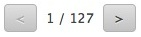

Weboberfläche für Tablets
Die Weboberfläche für Tablets wurde optimalisiert für Touch-Bildschirme und Tablet-Standardbrowser wie Safari unter iOS, Chrome in Android und Silk in Kindle Fire. Wenn Sie sich aus diesen Geräten aus anmelden, werden Sie direkt zur Tablet-Weboberfläche weitergeleitet.Da die Tablet-Weboberfläche kein JavaScript benötigt, unterstützt Sie ältere und mobile Browser, welche wiederum nicht von der Desktop-Weboberfläche unterstützt werden. Alle Aktionen werden nur mit der linken Maustaste ausgeführt, bzw. durch Drücken auf den jeweiligen Button. Es gibt keine Auswahlmenüs oder Popup-Fenster.
Tap

Das Icon-Menü bietet Ihnen einen einfachen Zugriff auf alle wichtigen Mail- und GroupWare-Funktionen. Die verschiedenen Elemente sind jeweils passend farblich abgesetzt.
- E-Mails
- Kontakte
- Kalender
- Aufgaben
- Notizen
- Dokumente
Um eine neue Nachricht zu erhalten, drücken Sie oben links auf das Post-Icon.

Wenn Sie eine neue Nachricht verfassen möchten oder einen neuen Kontakt bzw. Termin, dann drücken auf der jeweiligen Seite links auf den Button "Neue Nachricht", "Neuer Kontakt" etc.
Für heutige Nachrichten wird nur die Uhrzeit angezeigt. Für ältere Nachrichten nur das Datum. Wenn Sie beide Informationen einsehen möchten, ziehen Sie Ihren Cursor über die Uhrzeit. Um die komplette Nachrichtenkopfzeile anzuzeigen, drücken Sie auf "Detail".
Ansichten

Die horizontale Ansicht zeigt alle belieben Ordner in der linken Seite. Der aktuelle Ordner ist eingefärbt und hat einen Punkt. Wenn Sie mehr Ordner zu dieser Liste hinzufügen möchten, benutzen Sie die Ordnerverwaltung. Die vertikale Ansicht bietet Ihnen eine Dropdown-Auswahl Ihrer Ordner auf der rechten Seite.

Die Ordnerverwaltung dient dazu, eine Verknüpfung zu einen Order für einen schnellen Zugriff zu erstellen. Sie dient auch dazu, Ordner zu erstellen, löschen und umzubenennen. Sie können Ordner auch als Standardordner hier setzen.
Seite wechseln

Wenn Sie die Seite wechseln möchten, benutzen Sie bitte die passenden Knöpfe, wie auf dem Bild oberhalb zu sehen ist.

Um zwischen Kontakten oder Terminen zu wechseln, benutzen Sie bitte die passenden Knöpfe, wie auf dem Bild oberhalb zu sehen ist.
Schnelle Antwort

Wenn die Formatierung und die Zustellungsmöglichkeiten keine Rolle für Sie spielen, können Sie die Schnell-Antwort unterhalb der aktuellen Nachricht nutzen, um zu antworten.
Auswahl

Die Auswahl funktioniert immer nur auf der aktuellen Seite
- um alle Elemente auf einer Seite auszuwählen, wählen Sie Alle.
- um ausgewählte Elemente abzuwählen, wählen Sie Keine.
Sie können auch die Checkbox links neben jedem Element nutzen, um einzelne Elemente auszuwählen.
Um alle Elemente in einem Ordner auszuwählen, müssen Sie eventuell in den "Einstellungen - Allgemein" die Elemente pro Seite erhöhen.
Verwalten

Wenn Sie mindestens ein Element ausgewählt haben, können Sie eine Aktion für dieses Element ausführen. Z.B. Löschen einer Nachricht.

Sie können aus weiteren Optionen im Pulldown-Menü auswählen. ( Als ungelesen makieren, Auf Blacklist setzen etc.).
Die Suche

Tippen Sie ein Wort in die Suchleiste ein und es wird nach passenden Informationen im aktuellen Fenster gesucht. Um die Suche in der jeweiligen Nachricht zu verfeinern, nutzen Sie z.B. folgende Möglichkeit: subject:Büro. Jetzt wird nach dem Wort Büro im Betreff gesucht. Eine Liste mit den Optionen der Schlüsselwortsuche finden Sie ganz unten in dieser Hilfe.
Um die Suche abzubrechen, drücken Sie auf ein Icon oder auf einen Ordner.
Spam
Um Spam als solchen zu makieren und den Absender auf die Blacklist zu setzen, können Sie folgendes tun:- in der Mail-Ansicht wählen Sie die Auswahl neben der E-Mail aus und als Aktion wählen Sie Blacklist.
- in der Mail-Ansicht wählen Sie die Auswahl neben der E-Mail aus und verschieben Sie die Nachricht in den Spam-Ordner.
Ordner verwalten

Verknüpfte Ordner in der Ordnerverwaltung werden als beliebte Ordner in der linken Seitenleiste angezeigt. Dadurch erhalten Sie einen schnelleren Zugriff auf Ihre beliebtesten Ordner. Sie können dem jeweiligen Ordner bzw. der Verknüpfung eine beliebige Beschreibung hinzufügen. Diese Beschreibung wird dann als Name des Ordners in der Ordnerverwaltung geführt.

Es ist praktisch den Ordner zu öffnen, indem Sie auf den Namen drücken, wenn der Ordner nicht mit der linken Seitenleiste verknüpft ist.

Die Option "Ordner hinzufügen" erstellt einen neuen Ordner. Wählen Sie bitte auch den Typ des neuen Ordners aus.

Ordner umbenennen. Wie Sie richtig vermuten, können Sie einen beliebigen Ordner umbenennen. Dies hat keinen Einfluss auf den Namen einer Verknüpfung.

Einen anderen Standard-Ordner zu verwenden kann sehr praktisch sein. Stellen Sie hier z.B. ein, wenn Sie einen anderen Standard-Ordner für Ihre ausgehende Post nutzen möchten.

Die Option Ordner leeren löscht den kompletten Inhalt des Ordner. Wenn Sie den Inhalt inklusive des Ordners an sich löschen möchten, wählen Sie die Aktion "Löschen".
Individualisieren

Die Einstellungen erlauben es Ihnen Ihre Weboberfläche zu individualisieren. Die verschiedenen Kategorien werden Links als Ordner angezeigt.

- Allgemein - Datumsformat, Zeitformat, Elementezähler, Hohen Kontrast verwenden, Bilder automatisch anhängen uvw.
- Erstellen - Lesebestätigung anfordern, Gesendete Nachricht im Ordner Gesendete Objekte speichern, Signatur änder uvm.
- Autoantwort - Hier können Sie eine individuelle Abwesenheitsnotiz erstellen, sollten Sie außer Haus sein.
- Weiterleiten - Stellen Sie hier ein, wenn Sie eingehende E-Mails weiterleiten möchten.
Abbrechen

Um eine Aktion abzubrechen, benutzen Sie bitte den Zurück-Button Ihres Browsers. Alle gemachten Änderungen werden verworfen.
Wechseln

Ganz unten in der Mitte der Tablet-Weboberfläche finden Sie Links, um in die Desktop- bzw. Mobile-Weboberfläche zu wechseln. Die Funktionen in der Desktop-Weboberfläche können aber nur in modernen vollwertigen Browsern gewährleistet werden. In älteren bzw. mobilen Browsern könnten Probleme auftreten.
Smart Attach

In Android-Tablets und auf klassichen PC´s sind Sie in der Lage, Dateien an eine Nachricht anzuhängen. Wenn Sie die Auswahl "SmartAttach benutzen" auswählen, werden die Dateien automatisch in Ihrem Dokumente-Ordner gespeichert und in der E-Mail als Link zum Downloaden integriert. Dadurch geht das Versenden von Mails mit Anhängen in mobilen Geräten um einiges einfacher und schneller.
Suchen mit Schlüsselwörtern

Nicht alle Schlüsselwörter dienen der Suche in jedem Bereich, Z.B: "subject:" (Betreff)wird nur in der Mail-Suche angewandt. Wenn Sie im Kalender suchen möchten, nutzen Sie Schlüsselwort "title:". Mehrfache Schlüsselwörter werden automatisch mit einem AND-Separator gefüllt und Sie müssen nichts weiteres einstellen. Sie können aber auch OR (oder) benutzen, um Ihre Suche zu verbessern. Wenn Sie NOT (nicht) verwenden, erhalten Sie auch Ergebnisse, welche nicht komplett dem gesuchten Wort entsprechen muss.
from: Um nach einem exakten Absender zu suchen (from:Sylvia)
to: Um nach einem exakten Empfänger zu suchen (to:David)
subject: Nach bestimmten Wörtern im Betreff suchen (subject:Mittagessen)
cc: Zur exakten Suche nach Empfängern im Kopie-Feld
bcc: Zur exakten Suche nach Empfängern im Bcc-Feld
fulltext: Zur Suche im Volltext innerhalb einer Nachricht (fulltext:test)
priority: Suche nach Prioritäts-Stauts: highest,high,normal,low,lowest (priority:high)
after: Versendete Nachrichten nach einem bestimmten Datum (after:2004/04/16)
before: Versendete Nachrichten vor einem bestimmten Datum (before:2004/04/16)
title: Zur Suche eines Betreffs in einem Termin (title:Test)
description: Zur Suche einer Beschreibung oder einer Notiz (description:Test)
name: Zur Suche von einem konkreten Namen
email: Zur Suche von einer konkreten E-Mail
keyword: Zur Suche nach einer bestimmten Kennzeichnung (tag:Business)
greater: Zur Suche nach Größe, größer als kB (greater:1024)
smaller: Zur Suche nach Größe, kleiner als kB (smaller:1024)
company: Kontaktsuche je nach Firma (company:IceWarp)
department: Kontaktsuche je nach Abteilung (department:IT)
location: Kontaktesuche je nach Ort (location:London)